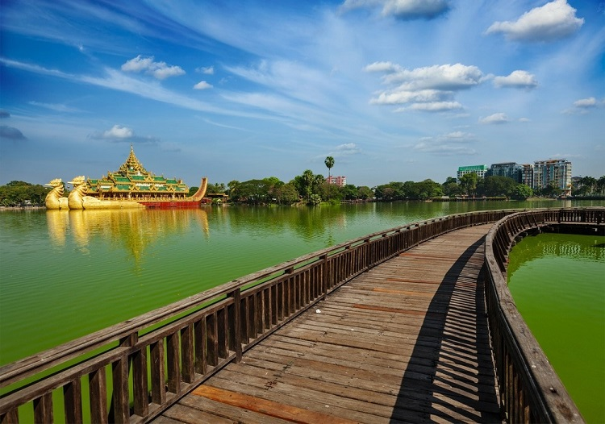
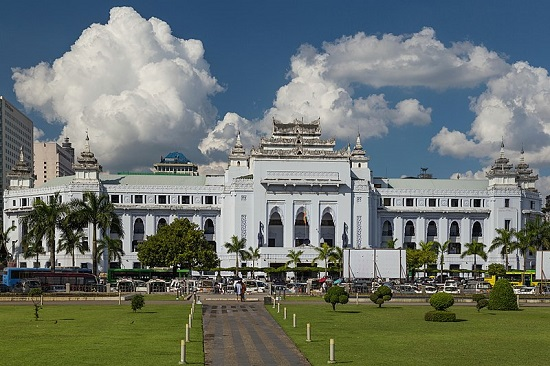

The Beautiful and Famous Places in Yangon City
Shwedagon Pagoda
The elegant Shwedagon Pagoda is Yangon’s most famous landmark. The massive 99 meter high gold plated pagoda with the diamond studded spire set on top of a small hill in downtown Yangon dominates the area and is visible from much of the city. After dark there is a mystical atmosphere with the pagoda lit up by spotlights.
The very impressive pagoda, also known as the Golden Pagoda, is Burma’s most important Buddhist pilgrimage site. The main stupa enshrines sacred relics of the Gautama Buddha as well as the three previous Buddhas.
|  |
Karaweik Hall & Kandawgyi LakeThe Karaweik Hall, also known as Karaweik Palace is one of Yangon’s many landmarks. From a distance the Karaweik Hall looks like a huge golden barge floating on Kandawgyi Lake, glittering in the sun. After dark the Karaweik barge is lit up in spotlights, the golden stupa reflecting in the water of Lake Kandawgyi. The hall actually is a concrete structure looking like two enormous golden birds with a roof in the shape of a Pyatthat, a Burmese style multi tiered very ornate roof structure. The prow of the ship is built in the shape of a Karaweik, a bird from Burmese mythology. A golden ball is hanging from its beak. The back of the structure is formed by the tail of the Karaweik bird in red and gold colors, on top of the tail is a depiction of a Nat spirit. After dark the Karaweik barge is lit up in spotlights, the golden stupa reflecting in the water of Lake Kandawgyi. The hall actually is a concrete structure looking like two enormous golden birds with a roof in the shape of a Pyatthat, a Burmese style multi tiered very ornate roof structure. The prow of the ship is built in the shape of a Karaweik, a bird from Burmese mythology. A golden ball is hanging from its beak. The back of the structure is formed by the tail of the Karaweik bird in red and gold colors, on top of the tail is a depiction of a Nat spirit.After dark the Karaweik barge is lit up in spotlights, the golden stupa reflecting in the water of Lake Kandawgyi. |
Yangon City Hall
Yangon City Hall is the city hall of Yangon, the largest city of Myanmar, and the seat of the city's administrative body, Yangon City Development Committee (YCDC). The building is considered a fine example of syncretic Burmese architecture, featuring traditional tiered roofs called pyatthat, and was designed by Burmese architect U Tin, who also designed Central Railway Station.[1] Construction began in 1926 and ended in 1936.[2] The city hall occupies the former site of the Ripon Hall.[2] The city hall has been the focal point of several major political demonstrations, including a 1964 People's Peace Committee rally supported by Thakin Kodaw Hmaing, which attracted 200,000 people and was subsequently clamped down by the Socialist regime.[3] and the site of several bombings, including one in 2000, 2008, and 2009.[4][5] Centrally located in downtown Yangon, it is next to several important landmarks such as Sule Pagoda, Maha Bandula Park, High Court, and the Main Post Office.
Walk around Inya Lake

Inya Lake is the largest lake in Yangon and has recently been renovated so that you can now easily walk along its pretty shores. The lake also backs on to lush gardens and the area is known for its scenic villas which are owned by many of Yangon’s elite. This makes a top choice to go for a walk in the evening and you can also stop off for a drink at the Inya Lake Hotel and watch the views across the water that way if you prefer.